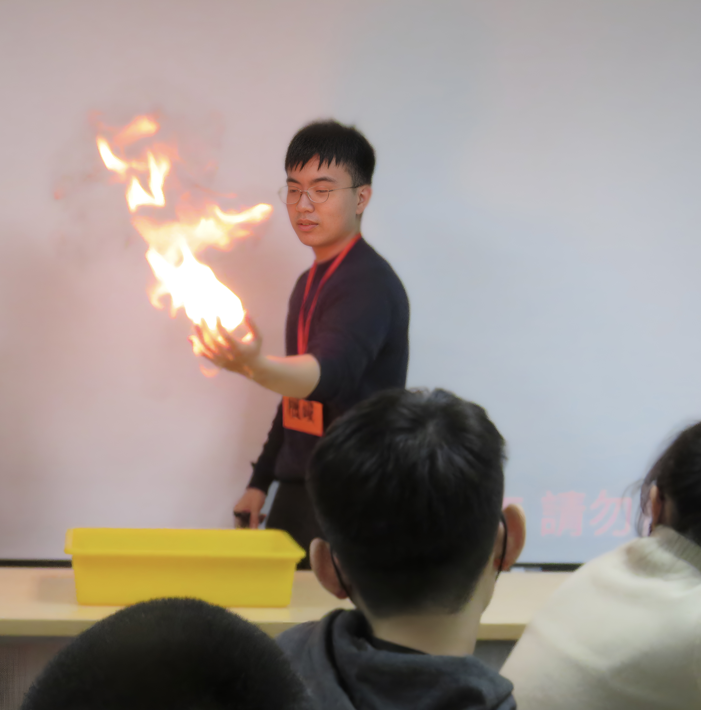

Profile
About Me
I am currently a Ph.D. student under the supervision of Andy Chen @ CHENLab. My research interests focus on leveraging multimodal methods, including fMRI, social network analysis, and nonverbal behavior, combined with naturalistic paradigms to study the mechanisms behind interacting minds and emergent properties in human interactions.
Education
Awards and Honors

Technical Skills
Programming
Python (Scikit-learn, PyTorch, TensorFlow), MATLAB, JavaScript, Node.js, Java, C, C++
Neuroimaging
Nltools, Nilearn, BrainIAK, fMRIPrep
Data Analysis
RSA, IS-RSA, SNA, ML/DL, ANOVA, GLM, HMM
Nonverbal Behavior Analysis
Py-Feat, OpenFace, OpenPose
Web Development
Meteor, SQL, BASH
Publications
Chen, P.-H. A., Chiu, T.-A. P., Hsiao, P.-Y. A., & Chou, F.-C. B. (2026). From experiences to preferences: neural insights through a naturalistic neuroimaging paradigm. Neuroeconomics: Core Topics and Current Directions.
Chen, P.-H. A.,* Chou, F.-C. B.,* & Wang, T.-R. H.* (2025). Rethinking acculturation: placing social interaction at the center of cultural adaptation. Social and Personality Psychology Compass, 19(11), e70099.
Chou, F.-C. B.,* & Chen, P.-H. A.* (2025). Beyond dyadic interaction and shared experience: rethinking social connections. Psychology of Learning and Motivation.
Chou, F.-C. B.,* Chen, Y.-C. C.,* et al. (2025). Facial insights: An exploration of similarity in spontaneous facial behaviors during pandemic lockdown. Technology, Mind, and Behavior, 6(2).
Hsiao, P.-Y. A., Kim, M. J., Chou, F.-C. B., & Chen, P.-H. A. (2024). Intersubject representational similarity analysis uncovers the impact of state anxiety on brain activation patterns in the human extrastriate cortex. Brain Imaging and Behavior, 18(2), 1-9.
Manuscripts Under Review
Hsu, C.-H., Chou, F.-C. B., & Chen, P.-H. A. (Under review). Tracing Psychometric Inference in Large Language Models.
Chou, F.-C. B.,* Chang, C.-Y. E.,* Lee, W.-T. W., Chang, J.-H., & Chen, P.-H. A. (Under review). Friendship in Mind: Linking mental representations of friendships to well-being.